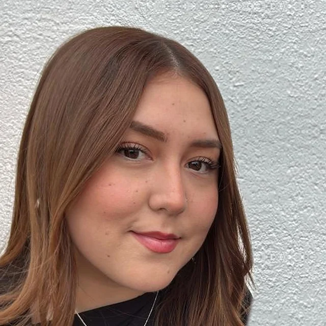

Hola, soy Constanza.
De lo que pide el cliente a la pantalla que lo resuelve.
Estudio Ingeniería Civil Informática en Santiago. Fui Product Owner en dos proyectos premiados en mi universidad, y también desarrollo interfaces web.
Por hacer
En curso
Hecho
Estoy buscando práctica profesional. Conversemos
Proyectos
Otros trabajos

Sobre mí
Estudio Ingeniería Civil Informática en la Universidad Autónoma de Chile, sede Providencia, desde 2022. Tengo aprobado el 85 % de la malla.
He trabajado en equipos con metodologías ágiles, desde los requerimientos hasta la interfaz. Me interesa especialmente la inteligencia artificial.
Soy vicepresidenta de Mujeres en la Ingeniería, un grupo que reúne a estudiantes de Ingeniería Civil Informática, Química e Industrial.
Trayectoria
- 2026Vicepresidenta, Mujeres en la Ingeniería
Salidas a empresas y participación en el Encuentro Estudiantil de Mujeres en Ingeniería, el 7 de noviembre.
- 2026Equipo ganador de Consultoría Informática
Por la participación y el aporte en los proyectos de VcM y A+S.
- 2026Mejor Prototipo Digital
Otorgado por los profesores al proyecto Dulce Gisela.
- 2026Scrum Foundation Professional (SFPC)
CertiProf, examen aprobado.
- 2026Technology Conference Chile
Asistente. Organizada por Digevo, NVIDIA y Oracle.
- 2022Ingreso a Ingeniería Civil Informática
Universidad Autónoma de Chile.
Habilidades
- Web
- Astro, HTML, CSS, JavaScript, Django (Python), Node.js, microservicios, API REST
- Móvil
- Flutter (Dart)
- Diseño
- Figma
- Datos
- Supabase (PostgreSQL)
- Equipo
- Scrum, trabajo por sprints, Jira, Git, GitHub
- IA
- Claude, ChatGPT, Gemini
- Electrónica
- ESP32, Arduino (C++)
¿Tienes una práctica para mí?
Escríbeme y conversemos.